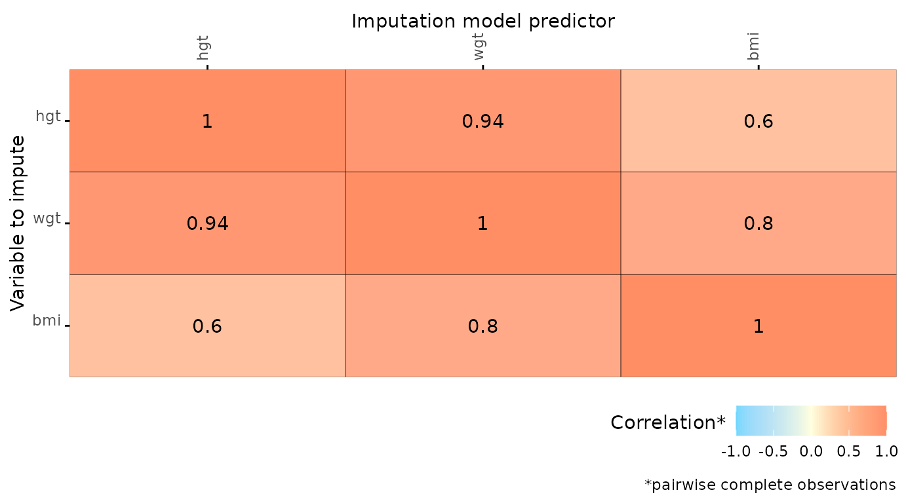

Overview
The package ggmice bundles a set of plotting functions for the imputation package mice. These plotting functions adhere to the ‘grammar of graphics’ style, popularized by the ggplot2 package. With that, ggmice enhances imputation workflows and provides plotting objects that are easy to extend and manipulate.
The main mice package contains several lattice style plotting functions, ggmice provides ggplot2 versions of these functions and more. The core function in the ggmice package, the ggmice() function, can be applied to obtain ggplot2 objects for both incomplete and imputed data. This vignette provides an overview of the main functions included in ggmice.
Set-up
The ggmice package can be installed from GitHub as follows:
install.packages("devtools")
devtools::install_github("amices/ggmice")It is recommended to load the imputation package mice and the plotting package ggplot2 into your workspace as well.
Incomplete data
The ggmice package contains functions to explore incomplete data.
Correlations between variables
The function plot_corr() can be used to investigate relations between variables, for the development of imputation models. Only one of the arguments (dat, the incomplete dataset) is required, all other arguments are optional.
plot_corr(dat)

Predictor matrix
The function plot_pred() displays mice predictor matrices. A predictor matrix is typically created using mice::make.predictorMatrix(), mice::quickpred(), or by using the default in mice::mice() and extracting the predictorMatrix from the resulting mids object. The plot_pred() function only requires the pred argument.
plot_pred(pred, label = TRUE, square = FALSE)
The ggmice() function
The ggmice function processes incomplete data in such a way that it can be displayed with ggplot2. The missing values are displayed on the axes.
ggmice(dat, ggplot2::aes(age, bmi)) +
ggplot2::geom_point()
ggmice(dat, ggplot2::aes(gen, bmi)) +
ggplot2::geom_point()
Imputed data
The ggmice package contains functions to evaluate observed and imputed data.


The ggmice() function
ggmice(imp, ggplot2::aes(log(wgt), hgt)) +
ggplot2::geom_point()
ggmice(imp, ggplot2::aes(x = .imp, y = bmi)) +
ggplot2::geom_jitter() +
ggplot2::geom_boxplot(size = 1, fill = "white", alpha = 0.5, outlier.shape = NA)